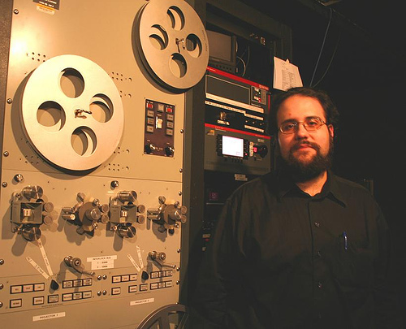
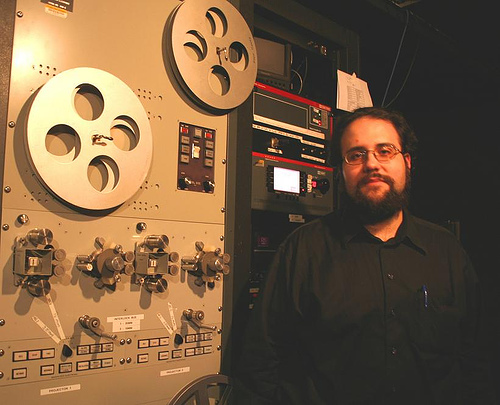

James Bond working his magic!

Spiro Karantzalis proudly watches over his machines
« Orphans 6 Finale | Main | Symposium Feedback Hits the Web! »
James Bond working his magic!

Spiro Karantzalis proudly watches over his machines
This page contains a single entry from the blog posted on April 15, 2008 1:30 AM.
The previous post in this blog was Orphans 6 Finale.
The next post in this blog is Symposium Feedback Hits the Web!.
Many more can be found on the main index page or by looking through the archives.